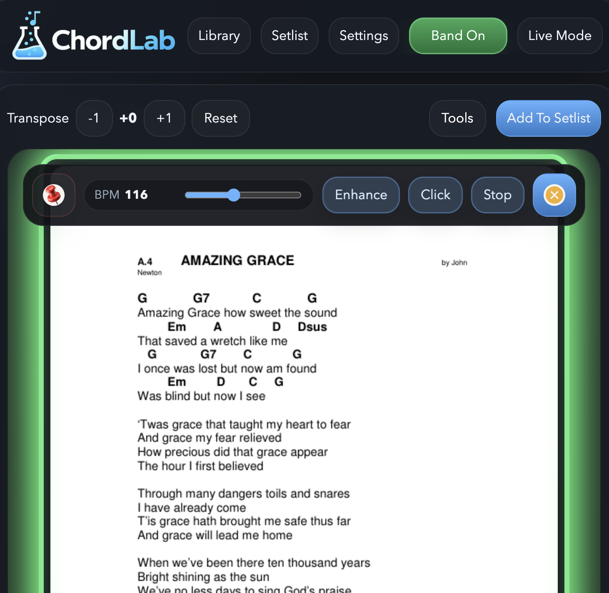

Transpose on the fly, even in Live Mode.
Change key quickly during rehearsal or worship without leaving the chart.

For rehearsals, worship teams, and live bands
ChordLab keeps your PDF and image charts, cloud libraries, setlists, annotations, and Band Mode sharing in one tablet-friendly workspace.


Inside ChordLab
Browse your library, reorder a live set, share charts across the band, and annotate on the fly with a workspace designed for performance.
Change key quickly during rehearsal or worship without leaving the chart.
Drag songs into place so everyone follows the same flow on stage.

Search and open the right chart quickly from a tablet-friendly library with clear loading feedback while cloud songs download.

Send the current chart to another member, even when the PDF is not already in their Dropbox or local library.

Use pen and eraser tools without breaking the flow of rehearsal or live play.

Use BPM controls, click support, and an enhanced visual pulse while the chord chart stays on screen.

What ChordLab does
Made for live performance, worship teams, and band rehearsals with a focus on speed, clarity, and reliability.
Import PDF, JPG, JPEG, and PNG charts, then browse, annotate, add to setlists, and send them to other members.
Create setlists, reorder songs by dragging, and keep your live set ready for the next rehearsal.
Transpose on the fly, even in Live Mode, including common slash chords. Image charts stay viewable and annotatable, but transpose is not supported.
Use pen and eraser tools to mark charts directly during practice or performance.
Connect Dropbox or Google Drive inside the app, complete secure sign-in in a browser tab, and return straight back to ChordLab.
Send charts, messages, and the chart file itself when the other device does not already have it.
How to
Dropbox and Google Drive now follow the same in-app flow, so signing in and returning to your library is much simpler.
Help
FAQ
Do all tablets need the same Dropbox or Google account?
No. If the receiving tablet does not already have the chart, ChordLab can receive the sent file and store it locally.
Does Band Mode use the internet?
Band Mode is designed for devices on the same local network. It does not require a ChordLab cloud server.
FAQ
No. If the receiving tablet does not already have the chart, ChordLab can receive the sent file and store it locally.
Band Mode is designed for devices on the same local network. It does not require a ChordLab cloud server.
Yes. ChordLab supports PDF, JPG, JPEG, and PNG for viewing, annotation, setlists, and sending to members. Transpose is only for chord-based charts.
ChordLab shows fetching progress in the library, gives a no-internet message when the network drops, and times out instead of hanging forever.
Support
If ChordLab helps your rehearsals, worship sets, or live sessions, you can support ongoing development.